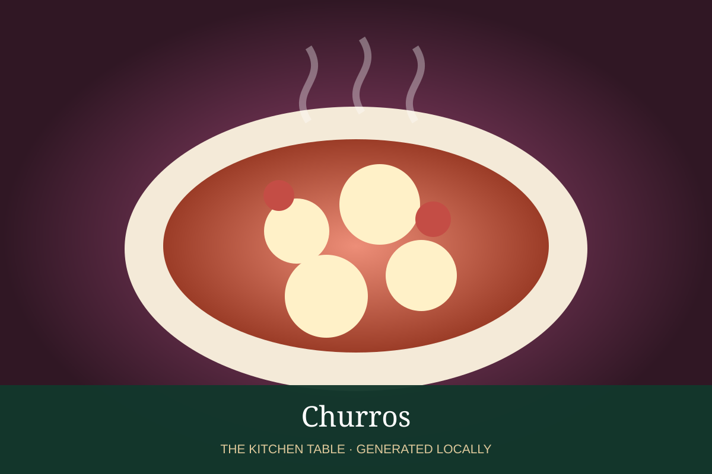

MEXICAN · DESSERTS & DRINKS
Churros
Crisp ridged Mexican churros rolled in cinnamon sugar, best served hot.

Ingredients
- 1 cup water
- 2 tbsp sugar
- 1/2 tsp salt
- 2 tbsp butter
- 1 cup flour
- 2 eggs
- Oil for frying
- 1/2 cup sugar + 1 tsp cinnamon
Method
- Bring water, sugar, salt, and butter to a boil.
- Stir in flour until a smooth dough forms; cool 5 minutes, then beat in eggs.
- Pipe ridged strips into 350°F oil and fry until deeply golden.
- Drain and immediately toss in cinnamon sugar.